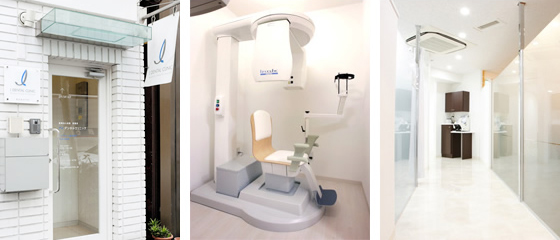
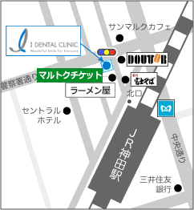
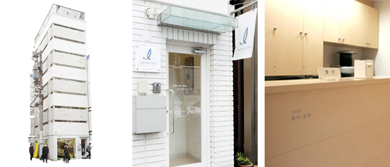
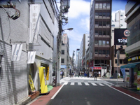
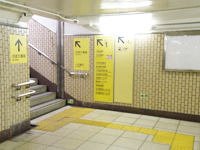
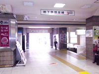

インプラントならアイデンタルクリニック トップページ > 概要・アクセス > 東京・神田医院の紹介
東京・神田駅から徒歩1分と ご来院にはとても便利です
ＪＲ各線（山手線、中央線、総武線）、地下鉄（銀座線）など、各方面からのご来院の際も、とても便利です。
アイデンタルクリニックの中でもっとも運営実績の長いクリニックですので、医院長をはじめ、ドクター、麻酔医、スタッフまで、患者様のご要望にしっかりお応えいたします。

|

|


東京・神田医院：医院長 山田 博司
|
東京・神田医院は、全フロアがクリニックとなっている専門医院です


神田駅からのご来院は、とてもわかりやすく便利です（ＪＲご利用の患者様）
北口を出てすぐ右手正面に「富士そば」さんが目に入ると思いますので、その通りを真っすぐにお進みください。２０ｍ程進むと左側にラーメン屋さんが見えてきます。 |
|
 | |
|  | 更に20m程進むと信号にぶつかりますが、信号の手前右手にドトールさん、左手にマルトクチケットさんがあり、マルトクチケットさんが入っている白いビルの2階が受付になります。 |
| |
青いロゴマークの入った旗が目印です。 |
地下鉄（銀座線）ご利用の患者様
|  | 銀座線日本橋方面の1番前の車両に乗って下さい。改札を出て1番出口に出て下さい。 |
|---|---|
| |
|  | JRの改札と直結しておりますので、北口に出て下さい。 |
| |
あとはJRと同じよう、青いロゴマークの入った旗を目印にご来院ください。 |